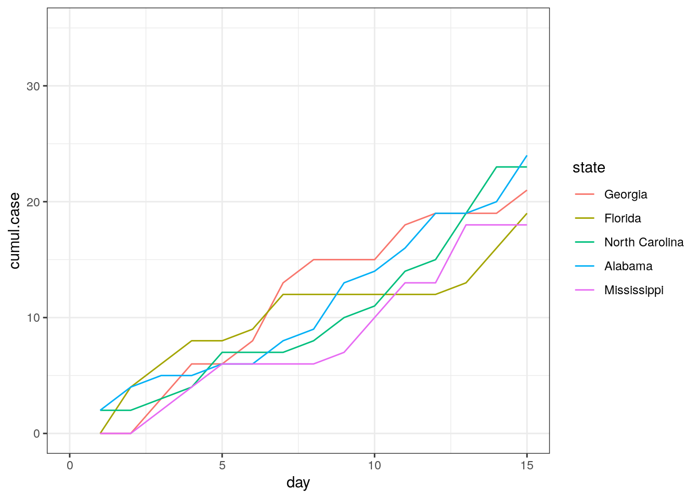

library(RcppRoll)
library(ggplot2); theme_set(theme_bw())
library(dplyr)Rolling Functions Along columns
How to apply aggregate functions that ‘roll’ across data
Rolling, or window, functions allow you to apply a function over a window of size n of a vector, such as a column in a dataframe. This is especially useful when you want to know the accumulation of some variable over time, like precipitation over the past month or the count of some occurrence in a surrounding number of days.
To follow this you’ll need the following packages:
I recently used rolling functions to deal with a data puzzle of my own. We had case data for a respiratory disease across multiple states and wanted to identify the start of the oubreak in each state. In this case, a state was considered in an outbreak after three consecutive days of new cases. The data looked something like this:
set.seed(8675309)
#create simulated case data
case.data <- data.frame(expand.grid(state = c("Georgia", "Florida", "North Carolina", "Alabama", "Mississippi"),
day = seq(1,50))) %>%
#simulate cases
rowwise() %>%
mutate(cases = rpois(1,lambda = day^(1/3)))
#randomly add some zeros to the beginning of the time series
for (i in 1:length(unique(case.data$state))){
this.zero.index <- sample(1:30, rpois(1,lambda=8))
case.data <- mutate(case.data, cases = case_when(
state == unique(case.data$state)[i] & day %in% this.zero.index ~ as.integer(0),
TRUE ~ cases
))
}
head(case.data)# A tibble: 6 × 3
# Rowwise:
state day cases
<fct> <int> <int>
1 Georgia 1 0
2 Florida 1 0
3 North Carolina 1 2
4 Alabama 1 2
5 Mississippi 1 0
6 Georgia 2 0And this is what the cumulative cases would look like by state:
case.data %>%
group_by(state) %>%
mutate(cumul.case = cumsum(cases)) %>%
ggplot(aes(x = day, y = cumul.case, color = state)) +
geom_line() +
xlim(0,15) +
ylim(0,35)Warning: Removed 175 row(s) containing missing values (geom_path).
The steps to finding the first day of an outbreak (i.e. the first day of three consecutive days with cases) are as follows:
- create a binary column
pos_caseswhere 1 is cases>0 and 0 is cases=0 - create a column that is the cumulative sum of
pos_casesover the prior three days, ranging from 0 - 3, with 3 signifyingp an outbreak - find the first day of the outbreak for each state
Use an ifelse statement to create the new column pos_cases
case.data <- case.data %>%
mutate(pos_cases = ifelse(cases>0,1,0))
head(case.data)# A tibble: 6 × 4
# Rowwise:
state day cases pos_cases
<fct> <int> <int> <dbl>
1 Georgia 1 0 0
2 Florida 1 0 0
3 North Carolina 1 2 1
4 Alabama 1 2 1
5 Mississippi 1 0 0
6 Georgia 2 0 0Use the roll_sum function from the RcppRoll package to calculate the number of days in the past three days that had cases. I group by state here since we want to do it for each state.
n corresponds to the window size, here 3 and the alignment of the window is specified as either “center”, “left”, or “right”. The easiest way to translate this to a column is to think of the column as a vector, so “right” would mean the window includes cells before the focal cell.

The final argument is fill which provides a value to fill in cells that cannot be calculated because their window is incomplete. For this example, it would be days 1 and 2.
case.data <- case.data %>%
group_by(state) %>%
arrange(day) %>%
mutate(sum_3day = roll_sum(x = pos_cases, n = 3, align = "right", fill = NA)) %>%
ungroup()
arrange(case.data, state, day)[1:8,]# A tibble: 8 × 5
state day cases pos_cases sum_3day
<fct> <int> <int> <dbl> <dbl>
1 Georgia 1 0 0 NA
2 Georgia 2 0 0 NA
3 Georgia 3 3 1 1
4 Georgia 4 3 1 2
5 Georgia 5 0 0 2
6 Georgia 6 2 1 2
7 Georgia 7 5 1 2
8 Georgia 8 2 1 3Finally, identify the first day of each outbreak by filtering the dataset only to those days that were the third day of the consecutive three days of cases, finding the minimum day for each state, and subtracting two to get to the start of the outbreak (since it began two days prior to when the outbreak was categorized)
outbreak.day <- case.data %>%
filter(sum_3day == 3) %>%
group_by(state) %>%
summarise(outbreak_day = min(day)-2) %>%
ungroup()
outbreak.day# A tibble: 5 × 2
state outbreak_day
<fct> <dbl>
1 Georgia 6
2 Florida 2
3 North Carolina 3
4 Alabama 1
5 Mississippi 3The roll family of functions is useful for many data manipulations over time and includes variations such as roll_min, roll_min and roll_max. All work similar to the roll_sum one described above.